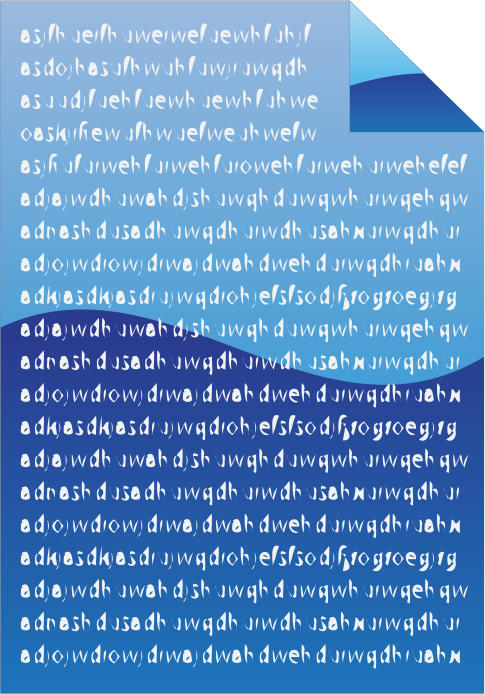

Live DevLog
| 26 Jul 2018 |
| 10:02:26 | STATUS |  The two most important things about Scyndi is now to support functions and types.... The two most important things about Scyndi is now to support functions and types.... |
| 10:02:07 | SYSTEM |  Well, I guess it's time to put through the system updates, or it keeps nagging me forever.... Well, I guess it's time to put through the system updates, or it keeps nagging me forever.... |
| 08:14:44 | NOTE |  None of this has yet been tested though None of this has yet been tested though |
| 08:13:54 | SCYNDI |  FOREACH has been set up (at least) FOREACH has been set up (at least) |
| 07:59:10 | FIXED |  Re-organized for-only-local-variables Re-organized for-only-local-variables |
| 25 Jul 2018 |
| 17:16:07 | CONFIG |  And updating the config that comes along with that And updating the config that comes along with that |
| 17:15:35 | BACKUP |  And let's run another backup And let's run another backup |
| 17:00:55 | STATUS |  Yeah forgive me, that things do not go that fast, but they, it's hot here... Yeah forgive me, that things do not go that fast, but they, it's hot here... |
| 17:00:02 | UNDESIRABLE |  A little issue has been found on the for loops, which can cause some conflicts... Now I wouldn't recommend the road that can cause these anyway, but still the language should be able to prevent these conflicts and Scyndi now can't.... So that'll need a little fixup, later A little issue has been found on the for loops, which can cause some conflicts... Now I wouldn't recommend the road that can cause these anyway, but still the language should be able to prevent these conflicts and Scyndi now can't.... So that'll need a little fixup, later |
| 12:47:41 | SCYNDI | Parse checkups FOREACH |
| 12:13:19 | TODO |  Wendicka/Scyndi#46 Wendicka/Scyndi#46 |
| 11:53:53 | CONFIRMED |  Indeed Indeed |
| 11:53:38 | COSMETIC |  Should be taken care of now Should be taken care of now |
| 11:53:07 | UNDESIRABLE | but not entirely the way it should look |
| 11:52:51 | SCYNDI | Console added |
| 11:49:20 | MEME |   |
| 11:48:26 | STATUS | For the FOREACH treatment I plan to use a VERY simplistic approach, but I guess it'll have to do |
| 11:46:06 | DONE |  Got myself a cup of coffee or a cup of poison.... With the stuff used to clean my Senseo machine it's hard to tell, but you'd think that four full flushses should suffice to get all that stuff out of it :P Got myself a cup of coffee or a cup of poison.... With the stuff used to clean my Senseo machine it's hard to tell, but you'd think that four full flushses should suffice to get all that stuff out of it :P |
| 11:44:25 | STATUS | Well When it comes to the Scyndi programming language, there are only a few major things to tackle: FOREACH, type support and function returns... |
| 10:05:41 | SCYNDI | Base for the editor done |
| 24 Jul 2018 |
| 21:14:22 | DONE | Wendicka/Scyndi#45 |
| 21:09:46 | NOTE | I need to check Wendicka/Scyndi#44 |
| 20:59:33 | TECHNO |  Techincally speaking Scyndi should now also support mapping, but i could not yet fully try that. Techincally speaking Scyndi should now also support mapping, but i could not yet fully try that. |
| 20:58:34 | FIXED | Some bugs that came along the way |
| 20:58:21 | SCYNDI | Repeat/Until |
| 20:58:12 | SCYNDI | While |
| 20:58:05 | SCYNDI | if |
| 18:33:28 | SCYNDI | Basic for-loop support for Lua export |
| 18:30:13 | SCYNDI | Set up the general function for regular for-loop support in Scyndi |
| 18:29:55 | CONFIG | Some config that comes with it done |
| 16:07:10 | BACKUP | Running |
| 16:06:35 | SYSTEM | Some updates |
| 16:06:15 | SCYNDI | Lua exporter is basis done |
| 15:58:27 | ENHANCEMENT |  IsFile IsFile |
| 15:08:51 | SCYNDI | "Hello World" now works in Lua output |
| 15:08:38 | SCYNDI | Basis for Lua works |
| 12:04:58 | CHECKED |  Lua does indeed not return any parse errors from the translated system module Lua does indeed not return any parse errors from the translated system module |
| 12:01:22 | FIXED | Endless variables not properly detected by Lua translator |
| 11:55:43 | SCYNDI | Basis set up for Lua translation |
| 10:47:58 | BUG |  Wendicka/Scyndi#42 Wendicka/Scyndi#42 |
| 10:26:37 | LUA |  What I meant to say was... the first version of the translator will for now focus on Lua as prime output... What I meant to say was... the first version of the translator will for now focus on Lua as prime output... |
| 10:23:16 | LUA | I will keep the BlitzMax set up for now, but it will very likely NOT be supported in the official release of Scorpion, I'm afraid.... |
| 10:21:22 | FAILURE |  Okay, now I must come to the conclusion that BlitzMax CANNOT support endless arguments properly due to a kind of a failed set up for this.... Now BlitzMax wasn't my prime target anyway, but I guess the prototyping in Blitzmax also has to end here... :-/ Okay, now I must come to the conclusion that BlitzMax CANNOT support endless arguments properly due to a kind of a failed set up for this.... Now BlitzMax wasn't my prime target anyway, but I guess the prototyping in Blitzmax also has to end here... :-/ |
| 09:55:28 | FAILURE | The spelling error in that meme HAS BEEN fixed prior to upload and even been properly exported in fixed form.... Don't you just HATE caching failures? |
| 09:54:17 | MEME |  |
| 09:53:21 | UPDATED |  Wendicka/Scyndi#3 Wendicka/Scyndi#3 |
| 09:19:09 | SCYNDI | And linked that to Scyndi |
| 09:18:02 | BLITZMAX |  Quick Array creation routine for translation from Scyndi Quick Array creation routine for translation from Scyndi |
| 23 Jul 2018 |
| 21:31:36 | PLAN |  Wendicka/Scyndi#41 Wendicka/Scyndi#41 |
| 21:29:33 | BRAINSTORM | I need to find out what the best method will be to handle this... :-/ |
| 21:28:09 | FIXED | A little fix in the declaration of endless parameters (not that you'll see that much effect yet) |
| 19:55:21 | STATUS | Today I had to many duties outside the house.... So I had to set my priorities straight... |
| 10:28:18 | CLOSED |  Wendicka/Scyndi#28 Wendicka/Scyndi#28 |
| 10:27:40 | DONE | Wendicka/Scyndi#28 |
| 08:52:30 | GAMEJOLT |  Yariv Livay (aka Fernandno) made an interesting announcement here Yariv Livay (aka Fernandno) made an interesting announcement here |
| 22 Jul 2018 |
| 21:52:12 | CONFIG | ANd it comes with more config I see... |
| 21:52:04 | BACKUP | Backup time |
| 21:42:23 | GITHUB |   All crap's been pushed All crap's been pushed |
| 20:45:52 | FIXED | And fixed some bugs that came by along the way |
| 20:45:37 | LINK |  Linked the enum parser to the main parser and translator Linked the enum parser to the main parser and translator |
| 14:41:59 | STATUS | I must link the code to the parser still, but that comes later. |
| 14:41:46 | SCYNDI | Base setup for enumbering |
| 12:59:14 | SCYNDI | Constants declared inside the translator's memory... It does not yet output any data,though |
| 11:56:37 | STATUS | As my brain is about to explode now, and this part of the language is for now in a (sort of) safe state, I'll focus on a few other aspects.... for now... |
| 10:00:54 | TODO | #40 |
| 09:57:21 | FIXED | I fixed the little bugger |
| 09:55:49 | SOLVED |  Wait a minute... I think I know... haha Wait a minute... I think I know... haha |
| 09:55:25 | RESULT |  The result shows the index variable is PROPERLY created... But WHY does THAT not show up in the translation? The result shows the index variable is PROPERLY created... But WHY does THAT not show up in the translation? |
| 09:54:14 | DEBUG |  let's see if this line gives answers let's see if this line gives answers |
| 09:50:54 | COCKROACH |  But the output is still the same AND faulty But the output is still the same AND faulty |
| 09:50:44 | FIXED | Well at least the translator is now called |
| 09:42:02 | BUG | And I can see now that the routine outputting the BlitzMax translation is not even called, and the same will happen to other languages with this bug, so this MUST BE fixed! |
| 09:41:31 | BUG | The translation is NOT in order though |
| 09:23:24 | FIXED | At least I could fix the direct trouble for wendicka/scyndi#39 |
| 21 Jul 2018 |
| 22:04:47 | STATUS | When this works the most important obstacle to make Scyndi work the way I want it to work is out of the way... :) |
| 22:02:59 | STATUS | I'm now resting.... So I will investigate the bug I mentioned earlier later |
| 22:02:20 | BACKUP | Running |
| 17:58:02 | GITHUB | Everything's been pushed |
| 17:55:59 | SCYNDI | Scorpion can now show version info |
| 17:33:04 | BUG | As I don't have much time now I've issued this as Wendicka/Scyndi#39 |
| 17:32:42 | BUG | Detection variable being indexable or not does not appear to work properly (at least not for arrays) |
| 17:29:07 | BUG | Ah.... I see there's something wrong here XD |
| 17:17:28 | FIXED | Parse errors (I think... It compiles, but I'm not sure of anything before I've seen it). |
| 17:03:11 | TEST |  Well.... Let's pray it works.... (as far as it can for now) :-/ Well.... Let's pray it works.... (as far as it can for now) :-/ |
| 17:02:04 | BLITZMAX | A kind of setup is done, but... it's far from perfect yet... :-/ |
| 16:35:23 | STATUS | I guess it goes without saying that due to this I cannot yet test if everything works the way it should (duh!) |
| 16:31:18 | NOTE | I must also note that 'range dimensions' is NOT yet supported, so this will always lead to an error... This is important to know for any kind of slicing I guess, but as string slicing is used most, extra notice for that. ;) |
| 16:28:26 | TECHNO | But as this cannot work without the output routine being adapted I cannot yet test this properly. |
| 16:27:46 | SCYNDI | I've set up a basis routine for indexing.... Now I really hope this'll work, though.... |
| 13:51:40 | GITHUB | All's pushed |
| 13:44:38 | CLOSED | Wendicka/Scyndi#38 |
| 13:44:13 | DOCUMENTATION | GNU license doc added |
| 13:35:55 | NOTE | there is no support for this for Scyndi Source Files yet, but that will soon happen :) |
| 13:35:30 | LICENSE |  All source files of Scyndi now have license blocks All source files of Scyndi now have license blocks |
| 13:35:04 | DOCUMENTATION | License Q&A |
| 09:47:02 | FIXED | Error in security crashout |
| 09:32:28 | TODO | Wendcika/Scyndi#38 |
| 09:25:41 | PLAN | Wendicka/Scyndi#37 |
| 09:00:40 | TODO | Wendicka/Scyndi#36 |
| 20 Jul 2018 |
| 20:41:08 | NOTE | Oh yeah, please note that array and map declarations will NOT work at all at this moment on function and procedure declarations |
| 20:38:35 | BLITZMAX | I've done a little experiment which will help me a lot to make mapping easier, and the outcome was stunning ;) |
| 20:33:47 | TECHNO | Once properly in order I must say that the expression routine will make cyclic calls to make recursing arrays possible and not to mention a call like a[1+b]... Maps will also do this for the same reasons, so concatenated strings should be no problem at all..... The hard part lies more in the fact that Scyndi will have to keep stuff in mind that the underlying targets might not be fully supportive of.... Oh well ;) |
| 20:31:03 | NOTE | Plues I must also take care of the expression routine in this matter, as it's bound some fully things can come up here..... :-/ |
| 20:29:58 | NOTE | And it also should NOT go without saying that maps are currently not supported at all and that NEW also doesn't work yet.... |
| 20:29:18 | SCYNDI | The parser will now accept array and map declaration....
Please note that the translator is not yet fully adept to this, and that lead to some funny situations when trying to translate code and maps ;) |
| 20:09:05 | BACKUP | And I'll run an extra backup.... |
| 20:07:47 | GITHUB | At least the repository is up-to-date (for what that's worth) :P |
| 20:07:07 | MEDICAL |   The heath saps my ability to think properly.... Still I hope I can still get things done a.s.a.p. The heath saps my ability to think properly.... Still I hope I can still get things done a.s.a.p. |
| 19:24:52 | SITE |  brainstorm icon brainstorm icon |
| 19:18:28 | OFFTOPIC |  I know what it is to be poor, but THIS beats everything! I know what it is to be poor, but THIS beats everything!https://www.facebook.com/uniladmag/videos/5088417481181270/ |
| 19:03:01 | OFFTOPIC | DAMN! Some people REALLY know how to put it! 
|
| 19:01:39 | SCYNDI | I did a small system module skeleton for php translation, but the actioal translation comes later |
| 18:43:42 | BRAINSTORM | I've been brainstorming a lot about how to do the arrays well.... Especially when it comes to customizable types and arrays of arrays or arrays of maps etc. etc. I don't want too much trouble with conversion of stuff, or to produce too much translation code. |
| 18:43:26 | SITE | Added tag BRAINSTORM |
| 16:59:59 | SCYNDI | Translations will now add those |
| 16:51:31 | SCYNDI | The translator now has its array basis type set up |
| 16:48:22 | BACKUP | I did run the backup in the meantime |
| 16:47:25 | DONE | Taken care of some "real life" stuff that do take priority |
| 13:34:34 | SCYNDI | Now THIS I can use to make sure, all array features Scyndi will have will be properly transferred to Scyndi... |
| 13:32:50 | FIXED | Ah, I found the little bugger ;) |
| 13:31:06 | BLITZMAX | Now this ALMOST works except for removing an entry from it halfway, and I wonder why that is... :-/ |
| 13:25:56 | BLITZMAX | Type set up for array translation |
| 19 Jul 2018 |
| 23:41:56 | BACKUP | Running |
| 22:36:43 | SCYNDI | You can now declare a function with unlimited arguments, although the translation will (for now) only translate it as one parameter and the caller will completely ignore this...
I will come back for this later, as I do need array translation for that, but as I want arrays to cover a few things that BlitzMax and Go have not well in order some complicated code is on the way. |
| 22:34:11 | SCYNDI | Optional parameter support |
| 13:48:56 | BACKUP | I'll run an extra backup in the meantime |
| 13:48:25 | STATUS | Bug progress was made, so I won't complain (too much). |
| 13:48:10 | MEDICAL | As my health leaves something to be desired today, I'll have to take a break now... |
| 13:38:05 | SCYNDI | The base is now there to easily translate to other languages.... Well sort of, although there is still a lot to be done, as Scyndi as far from able to handle really complex code |
| 13:29:42 | BLITZMAX | And the good news is that in BlitzMax the code compiles :) |
| 13:29:24 | SCYNDI | Wooohooo! Procedure calls now work in Scyndi |
| 18 Jul 2018 |
| 20:24:16 | MEDICAL | HEADACHE!!! |
| 20:23:18 | BACKUP | Running |
| 20:21:53 | STATUS | he things left to do in Scyndi are:Repeat loops... Harder than If and while, but not too hard in the simple translation (not even when translating to Go where the feature's not even supported :P)- Function calls are not yet supported, this will need to be done in both procedurial calls as being called by expressions.
- Infinite arguments for functions
- Array and map support
- Types and methods
When all that is done Scyndi itself is ready for action |
| 20:11:08 | FIXED | Wendicka/Scyndi#33 |
| 20:10:57 | TODO | Wendicka/Scyndi#35 |
| 17:03:54 | NOTE | This does not yet include FOR EACH (they won't be done until Arrays and Maps are fully supported) |
| 17:03:37 | SCYNDI | Code set up for creating regular FOR loops |
| 15:55:47 | SCYNDI | FOR definition readout.... Now to output everything |
| 15:13:26 | DONE | Real-Life stuff taken care of |
| 13:56:25 | NOTE | 'Else' is not yet supported, as proper support for that is harder than it looks... |
| 13:56:06 | SCYNDI | ElIf support |
| 13:28:58 | CONFIG | I've made a small set up to make FOR translation possible |
| 13:12:33 | SCYNDI | Repeat and until support |
| 12:06:17 | NOTE | I should note that I've put the game on hold as the really complex part of Scyndi is now being done, once this is done, I can focus on the game once more... I guess you already noticed, but I hereby make that official ;) |
| 11:42:19 | STATUS | Before coming to the FOR-loops though I'll first try to get to the "REPEAT" and UNTIL loops.... |
| 11:39:49 | SCYNDI | Furthermore I must note that this routine may also be 'ported' to the other languages Scyndi will support as well for important reasons. This ensures that in all languages Scyndi translated code cannot 'spook up' because variable values used to construct the 'for' definition due to modification. Scyndi programmers should be aware of this and use a WHILE loop in stead if modifications are still needed! |
| 11:37:43 | BLITZMAX | Since BlitzMax only accepts CONSTANTS for the STEP paramter in its FOR loops I had to create an alternate routine to make FOR loops happen. |
| 11:36:28 | PLAN | Wendicka/Scyndi#31 |
| 17 Jul 2018 |
| 21:50:50 | STATUS | And calling it a day... see ya :) |
| 21:50:31 | GAMEJOLT | Did some work here too |
| 21:50:18 | BACKUP | Running |
| 21:50:11 | CONFIG | Backup tool (again) |
| 21:49:25 | STATUS | The things left to do in Scyndi are:- Repeat loops... Harder than If and while, but not too hard in the simple translation (not even when translating to Go where the feature's not even supported :P)
- Function calls are not yet supported, this will need to be done in both procedurial calls as being called by expressions.
- Infinite arguments for functions
- Array and map support
- Types and methods
When all that is done Scyndi itself is ready for action and then writing most translation modules will be easy. Wendicka translation might offer the most problems, I fear... Then for Scyndi I have too tools in mind. The tool 'Dernor' will be a project handler, it will send the correct data to configure Scorpion when translating, and will even be configured to call the required compiler to do the actual compiling (when compiling to a compiler based language) or bundling (when creating interpreter based code with a bundle structure, such as Java or LÖve), and perhaps I might even make it possible to make Dernor call the correct subtools or stuff if a full Mac Bundle has to be created (Not guaranteed it will fit the requirements of the AppStore, though). Please note, Dernor itself will NOT do anything itself, it's just a manager calling all tools to get the job done. The project files it uses will very likely be in the GINI format. Lastly, and there's no name for that yet, a simplistic IDE, with Syntax Highlight, and a caller to Dernor. This tool will likely be written in BlitzMax first, and will only see light for the short run, as I will definitely take a look into how to set up scripts for that for well-known existing editors, such a Geany, but as I am a bit in the dark in that department, this IDE will at least cover the short-term needs. Well, so far this update ;) |
| 21:35:53 | NOTE | Boolean expressions have very little checking now and a rather big allowance... Some errors can be in order in the future to prevent crazy syntaxes from being translated into code that will guarantee errors in the target parser, and those will be harder to debug (it's for that reason I want it to be possible to make reference comments to the original lines of code in Scyndi... |
| 21:32:06 | NOTE | I must note this will now only handle languages with a syntax that is not too far of the syntax Scyndi uses. So converting if and while to languages such as C, C++, php, Pascal, BASIC, Lua, Go and many more will be easy. Languages using a different approach, such as Wendicka (and maybe even assembler) will be harder.... |
| 21:30:19 | SCYNDI | While support |
| 20:53:41 | SCYNDI | If Blocks now work for simple translations, although some extra functionality to boolean checks could definitely be desireable in enhanced versions of Scyndi! |
| 19:37:48 | CONFIRMED | Variables declared in imported units/libs/modulkes are properly imported and translated |
| 19:30:40 | SCYNDI | Interger var conversion |
| 19:16:34 | BUG | Wendicka/Scyndi#30 |
| 17:55:24 | BUG | Concatenation throws an error |
| 17:43:52 | SCYNDI | Working with brackets appears to work |
| 17:30:41 | NOTE | It's not yet said that this tabbing will completely work out well enough to make Scyndi able to translate to Python.... This was only a quick setup and Python is kinda terrible on this department. :-/ |
| 17:29:41 | COSMETIC | Tabbing.... |
| 17:23:07 | SCYNDI | I forgot working with brackets |
| 16:58:51 | STUPIDITY |  It was put in the Wendicka translator options... Silly me.... :-| It was put in the Wendicka translator options... Silly me.... :-| |
| 16:57:45 | FIXED | Ah the operators were not well copied :-/ |
| 16:37:46 | BUG | Okay, end of expression appears to be never expected (even when it should be), let's see what we can do about that... |
| 16:10:22 | FIXED | Transmode header forgotten item |
| 16:09:24 | PLAN | wendicka/scyndi#28 |
| 16:09:09 | DONE | Set up things more properly |
| 15:37:12 | TODO | wendicka/scyndi#27 |
| 14:52:34 | FIXED | A few more required fixes |
| 14:35:35 | FIXED | Parse errors |
| 14:28:19 | TEST | All I can test is the parse errors being gone, so let's do it.... ;) |
| 14:27:58 | CLEANUP |  Some older shit removed Some older shit removed |
| 14:25:59 | SCYNDI | Operator support |
| 14:04:35 | CLOSED | wendicka/scyndi#26 -- No longer an issue |
| 11:35:02 | OFFTOPIC | I guess thread necromancy NEVER dies 
|
| 16 Jul 2018 |
| 21:07:30 | DONE | Nothing like a good shower after a day this hot |
| 20:51:31 | GITHUB | Repo up-to-date |
| 20:51:10 | BACKUP | Running |
| 20:51:02 | STATUS | Time for a break.... Maybe even to call it for today.... |
| 20:30:33 | TECHNO | (frankly... ALL I can check now is that the Go compiler doesn't complain). |
| 20:29:31 | SCYNDI | Constant and identifier translation appears to be working.... Well at least for now.... |
| 18:32:55 | SCYNDI | Square bracket usage (of arrays and stuff) will temporarily throw an error. I cannot do all in once, ya know. |
| 17:59:04 | DONE | Answered some important polls |
| 16:20:28 | SCYNDI | Header code present |
| 15:01:41 | CONFIG | And some required config taken care of (sigh) |
| 14:05:01 | BACKUP | In the meantime I'll run the backup tool |
| 14:04:48 | TODO | I'll take a break now |
| 13:49:54 | FIXED | Case error |
| 13:24:11 | BLITZMAX | Config for operation conversion in BlitzMax |
| 13:17:23 | EXPERIMENT |  Not much, but what I wanted to be confirmed has been confirmed Not much, but what I wanted to be confirmed has been confirmed |
| 13:14:10 | MEDICAL | It should be noted the heath is very very terrible today and also suffocating me, so don't expect too much of me, and I may need a lot of rests every now and then.... |
| 13:13:22 | DONE | Some real life trouble in my way |
| 12:09:08 | FIXED | forgotten commas |
| 11:59:20 | SCYNDI | Made the correct header code for everything |
| 11:57:03 | SCYNDI | Function setup for default expression translation |